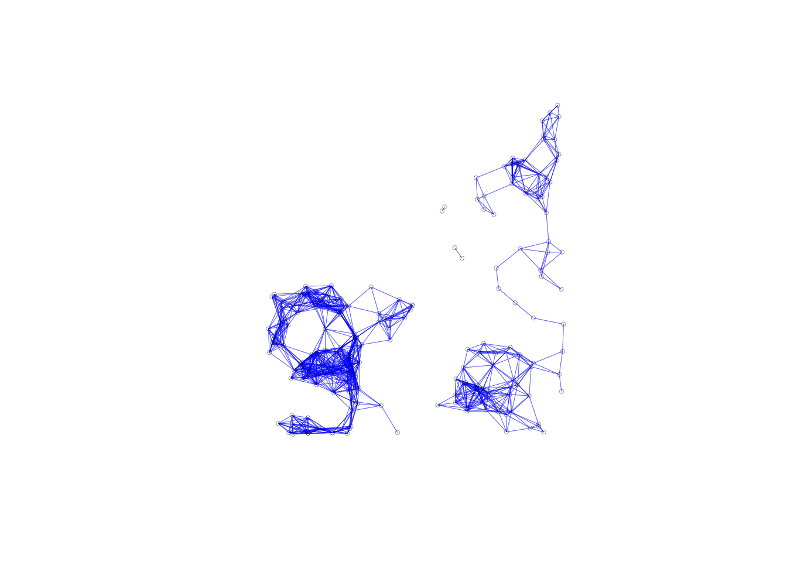

Introduction
This notebook covers the functionality of the Spatial Weights as Distance Functions section of the GeoDa workbook. We refer to that document for details on the methodology, references, etc. The goal of these notes is to approximate as closely as possible the operations carried out using GeoDa by means of a range of R packages.
The notes are written with R beginners in mind, more seasoned R users can probably skip most of the comments on data structures and other R particulars. Also, as always in R, there are typically several ways to achieve a specific objective, so what is shown here is just one way that works, but there often are others (that may even be more elegant, work faster, or scale better).
For this notebook, we use Cleveland house price data. Our goal in this lab is show how to assign spatial weights based on different distance functions.
Objectives
After completing the notebook, you should know how to carry out the following tasks:
Compute inverse distance functions
Compute kernal weights functions
Assess the characteristics of weights based on distance functions
R Packages used
sf: To read in the shapefile.
spdep: To create k-nearest neighbors and distance-band neighbors, calculate distances between neighbors, convert to a weights structure, and coercion methods to sparse matrices.
geodaData: To access the data for this notebook.
R Commands used
Below follows a list of the commands used in this notebook. For further details and a comprehensive list of options, please consult the R documentation.
Base R:
install.packages,library,setwd,class,str,lapply,attributes,summary,head,seq,as,cbind,max,unlist,length,sqrt,exp,diag,sort,appendsf:
st_read,plotspdep:
knn2nb,dnearneigh,knearneigh,nb2listw,mat2listw
Preliminaries
Before starting, make sure to have the latest version of R and of packages that are compiled for the matching version of R (this document was created using R 3.5.1 of 2018-07-02). Also, optionally, set a working directory, even though we will not actually be saving any files.2
Load packages
First, we load all the required packages using the library command. If you don’t have some of these in your system, make sure to install them first as well as their dependencies.3 You will get an error message if something is missing. If needed, just install the missing piece and everything will work after that.
library(sf)## Linking to GEOS 3.6.1, GDAL 2.1.3, PROJ 4.9.3library(spdep)## Loading required package: sp## Loading required package: Matrix## Loading required package: spData## To access larger datasets in this package, install the spDataLarge
## package with: `install.packages('spDataLarge',
## repos='https://nowosad.github.io/drat/', type='source')`library(geodaData)Obtaining the Data from the GeoDa website
All of the data for the R notebooks is available in the geodaData package. We loaded the library earlier, now to access the individual data sets, we use the double colon notation. This works similar to to accessing a variable with $, in that a drop down menu will appear with a list of the datasets included in the package. For this notebook, we use clev_pts.
Otherwise, Tt get the data for this notebook, you will and to go to Cleveland Home Sales The download format is a zipfile, so you will need to unzip it by double clicking on the file in your file finder. From there move the resulting folder titled: nyc into your working directory to continue. Once that is done, you can use the sf function: st_read() to read the shapefile into your R environment.
clev.points <- geodaData::clev_ptsInverse Distance Weights
Concepts
One can readily view spatial weights based on a distance cut-off as representing a step function, with a value of 1 for neighbors with \(d_{ij} < \delta\), and a value of 0 for others. As before, \(d_{ij}\) stands for the distance between observations i and j, and \(\delta\) is the bandwidth.
A straightforward extension of this principle is to consider a continuous parameterized function of distance itself: \[w_{ij}=f(d_{ij},\theta)\] with f as a functional form and \(\theta\) a vector of parameters.
In order to conform to Tobler’s first law of geography, a distance decay effect must be respected. In other words, the value of the function of distance needs to decrease with a growing distance. More formally, the partial derivative of the distance function with respect to distance should be negative, \(\partial{}w_{ij}/\partial{}d_{ij}<0\) .
Commonly used distance functions are the inverse, with \(w_{ij}=1/d_{ij}^\alpha\)(and \(\alpha\) as a parameter), and the negative exponential, with \(w_{ij}=e^{-\beta d_{ij}}\)(and \(\beta\) as a parameter). The functions are often combined with a distance cut-off criterion, such that \(w_{ij}=0\) for \(d_{ij}>\delta\).
In practice, the parameters are seldom estimated, but typically set to a fixed value, such as \(\alpha=1\) for inverse distance weights (\(1/d_{ij}\)), and \(\alpha=2\) for gravity weights (\(1/d_{ij}^2\)). By convention, the diagonal elements of the spatial weights are set to zero and not computed. Plugging in a value of \(d_{ii}=0\) would yield division by zero for inverse distance weights.
The distance-based weights depend not only on the parameter value and functional form, but also on the metric used for distance. Since the weights are inversely related to distance, large values for the latter will yield small values for the former, and vice versa. This may be a problem in practice when the distances are so large (i.e., measured in small units) that the corresponding inverse distance weights become close to zero, possibly resulting in a zero spatial weights matrix.
In addition, a potential problem may occur when the distance metric is such that distances take on values less than one. As a consequence, some inverse distance values may be larger than one, which is typically not a desired result.
Rescaling of the coordinates will fix both problems.
Creating inverse distance functions for distance bands
To create our inverse disatnce weights, we follow the steps involved with creating distance-band neighbors along with a few additional steps to calculate and assign the weight values. Here we will go over a basic outline of the steps to create the inverse distance weights. First we calculate our distance-band neighbors. Next we get the distances between each neighbors stored in the same format as the neighbors data structure. Then we apply a function to each element in this structure, giving us the inverse distances. Finally we assign these as the weight values when converting from class nb to class listw.
We begin by putting our coordinates in a separate matrix from clev.points
coords <- cbind(clev.points$x,clev.points$y)In order to calulate our distance-band neighbors, we need an upper and lower distance bound. The lower is always 0 for the most part. We can put anything for the upper, but we will pick a value, that keeps isolates out of our distance-band-neighbors. To do this we need to find the k-nearest neighbors for k = 1, then get the maximum distance between points. This is covered in the distance-band spatial weights notebook, but we will go through the steps here.
To get the k-nearest neighbors for k = 1, we need two function from the spdep library: knn2nb and knearneigh. knearneigh calculates the neighbors and stores the information in class knn, and knn2nb converts the class to nb, so we can work with it further.
k1 <- knn2nb(knearneigh(coords))Computing the critcal threshold will require a few functions now that we have a neighbors list. First step is to get the distances between each point and it’s closest neighbor. This can be done with the nbdists. With these distances, we just need to find the maximum. For this we use the max command. However, we cannot do this with lists, so we must first get a data type that works for the max command, in our case, we use unlist
critical.threshold <- max(unlist(nbdists(k1,coords)))
critical.threshold## [1] 3598.055We have all the necessary components to calculate the distance-band neighbors. To get these we use dnearneigh. The parameters needed are the coordinates, a lower distance bound and an upper distance bound.
nb.dist.band <- dnearneigh(coords, 0, critical.threshold)To get inverse distance, we need to calculate the distances between all of the neighbors. for this we will use nbdists, which gives us the distances in a similar structure to our input neighbors list. To use this function we need to input the neighbors list and the coordinates.
distances <- nbdists(nb.dist.band,coords)
distances[1]## [[1]]
## [1] 385.161 3013.071 1160.312 1858.904 3367.150 2525.503 3253.025 3390.735
## [9] 3369.644Calculating the inverse distances will require a function that applies 1/x over the entire distances data structure. We will use lapply to accomplish this. The parameters needed are the distances, and a function which we specify in lapply. We use the function operator with (1/x) to get the appropriate function.
invd1 <- lapply(distances, function(x) (1/x))Here we check the length of the inverse distances to make sure it lines up with our neighbors list.
length(invd1)## [1] 205We check the first element of the resulting data structure to make sure it is in line with the neighbors list structure. This is important because we will need the structures to correspond in order to assign the inverse distances as the weight values when converting from a neighbors list or class nb to a weight structure: class listw.
invd1[1]## [[1]]
## [1] 0.0025963168 0.0003318873 0.0008618371 0.0005379514 0.0002969871
## [6] 0.0003959608 0.0003074062 0.0002949213 0.0002967673A key insight from the first element of the inverse distance structure is that the values are very small, or too close to zero. The unit of distance for our dataset is in feet. This means distance values between points can be quite large and result in small inverses. To correct for this scale dependence, we can rescale the distances by repeating the inverse calculations, while adjusting the scale. We can make this adjustment by dividing x in our function by 100, before calculating the inverses.
invd1a <- lapply(distances, function(x) (1/(x/100)))
invd1a[1]## [[1]]
## [1] 0.25963168 0.03318873 0.08618371 0.05379514 0.02969871 0.03959608
## [7] 0.03074062 0.02949213 0.02967673Now that we have properly scaled inverse distances, we can assign them as weight values. This is done in the conversion function nb2listw. To assign the weights, we use the glist = argument. For this to work we also have to specify style = "B", otherwise the listw function will use the default row standardization.
invd.weights <- nb2listw(nb.dist.band,glist = invd1a,style = "B")Here we take a cursory look at our weights with summary to get basic imformation and statistics.
summary(invd.weights)## Characteristics of weights list object:
## Neighbour list object:
## Number of regions: 205
## Number of nonzero links: 2592
## Percentage nonzero weights: 6.167757
## Average number of links: 12.6439
## Link number distribution:
##
## 1 2 3 4 5 6 7 8 9 10 11 12 13 14 15 16 17 18 19 20 21 22 23 24 25
## 6 6 9 5 5 10 8 10 13 12 11 6 17 8 9 11 13 6 10 7 2 4 6 2 1
## 26 27 28 29 30 32
## 1 1 2 1 1 2
## 6 least connected regions:
## 59 114 115 116 117 198 with 1 link
## 2 most connected regions:
## 82 88 with 32 links
##
## Weights style: B
## Weights constants summary:
## n nn S0 S1 S2
## B 205 42025 180.2882 145.9202 1018.442We can check the values of the weights by using $weights to access the values.
invd.weights$weights[1]## [[1]]
## [1] 0.25963168 0.03318873 0.08618371 0.05379514 0.02969871 0.03959608
## [7] 0.03074062 0.02949213 0.02967673Properties of inverse distance weights
Since the properties only pertain to the connectivity structure implied by the weights, they are identical to the ones obtained for the standard distance-band weights. It is important to keep in mind that the actual values for the weights are ignored in this operation.
plot(invd.weights, coords, lwd=.2, col="blue", cex = .5)
The connectivity map and the connectivity graph associated with the weights are the same as before as well.
Using non-geographical coordinates
So far we have been using x and y coordinates for the inputs into distance calculates, but it is important to note that you can use any two variables contained in the dataset in place of x and y coordinates. For example, this allows for the computation of so-called socio-economic weights, where the difference between two locations on any two variables can be used as the distance metric. We don’t do this in this notebook, as the only meaningful variable in our dataset is housing prices.
Creating inverse distance functions for k-nearest neighbors
We can compute inverse distance weights for k-nearest neighbors using the same approach as for distance-band neighbors. The only difference being that we don’t have to calculate a critical threshold for k-nearest neighbors.
We start by getting the k-nearest neighbors for k = 6. We do this with knearneigh and knn2nb.
k6 <- knn2nb(knearneigh(coords, k = 6))
str(k6)## List of 205
## $ : int [1:6] 2 6 7 8 10 31
## $ : int [1:6] 1 7 8 10 31 32
## $ : int [1:6] 4 5 11 13 15 17
## $ : int [1:6] 3 5 6 11 13 15
## $ : int [1:6] 3 4 6 11 13 15
## $ : int [1:6] 3 4 5 10 11 15
## $ : int [1:6] 1 2 8 9 10 31
## $ : int [1:6] 2 7 10 31 32 34
## $ : int [1:6] 8 10 11 31 34 35
## $ : int [1:6] 4 6 7 8 9 34
## $ : int [1:6] 3 4 5 12 13 14
## $ : int [1:6] 3 11 13 14 17 18
## $ : int [1:6] 3 11 12 14 17 18
## $ : int [1:6] 3 4 11 12 13 18
## $ : int [1:6] 3 4 5 6 11 13
## $ : int [1:6] 3 12 13 17 18 19
## $ : int [1:6] 3 12 13 16 18 19
## $ : int [1:6] 12 13 14 17 44 45
## $ : int [1:6] 17 18 44 45 46 47
## $ : int [1:6] 19 21 22 27 46 47
## $ : int [1:6] 22 26 27 28 29 56
## $ : int [1:6] 21 23 24 25 28 29
## $ : int [1:6] 22 24 25 27 28 29
## $ : int [1:6] 22 23 25 27 28 29
## $ : int [1:6] 22 23 24 27 28 29
## $ : int [1:6] 21 27 28 29 56 57
## $ : int [1:6] 21 26 28 29 56 57
## $ : int [1:6] 21 22 26 27 29 56
## $ : int [1:6] 22 23 24 25 28 56
## $ : int [1:6] 31 32 33 38 39 40
## $ : int [1:6] 8 30 32 33 34 35
## $ : int [1:6] 8 30 31 33 34 35
## $ : int [1:6] 30 38 39 40 41 42
## $ : int [1:6] 8 9 31 32 33 35
## $ : int [1:6] 8 9 31 32 33 34
## $ : int [1:6] 18 43 44 45 101 103
## $ : int [1:6] 33 38 39 40 41 42
## $ : int [1:6] 33 37 39 40 41 42
## $ : int [1:6] 33 37 38 40 41 42
## $ : int [1:6] 33 37 38 39 41 42
## $ : int [1:6] 33 37 38 39 40 42
## $ : int [1:6] 33 37 38 39 40 41
## $ : int [1:6] 18 19 44 45 46 47
## $ : int [1:6] 18 19 43 45 46 47
## $ : int [1:6] 18 19 43 44 46 47
## $ : int [1:6] 18 19 43 44 45 47
## $ : int [1:6] 18 19 43 44 45 46
## $ : int [1:6] 49 50 51 52 54 55
## $ : int [1:6] 48 50 51 52 54 55
## $ : int [1:6] 48 49 51 52 54 55
## $ : int [1:6] 48 49 50 52 54 55
## $ : int [1:6] 48 53 54 80 81 103
## $ : int [1:6] 52 54 80 81 82 103
## $ : int [1:6] 52 53 80 81 84 85
## $ : int [1:6] 48 49 50 51 54 80
## $ : int [1:6] 21 26 27 28 29 57
## $ : int [1:6] 26 27 28 29 55 56
## $ : int [1:6] 59 72 73 94 95 97
## $ : int [1:6] 58 73 77 78 79 200
## $ : int [1:6] 98 104 105 106 107 109
## $ : int [1:6] 62 63 64 65 66 199
## $ : int [1:6] 61 63 65 66 68 69
## $ : int [1:6] 61 62 64 65 66 199
## $ : int [1:6] 61 62 63 65 67 199
## $ : int [1:6] 62 63 66 67 68 69
## $ : int [1:6] 65 67 68 69 70 71
## $ : int [1:6] 64 65 66 68 69 71
## $ : int [1:6] 65 66 67 69 70 71
## $ : int [1:6] 62 65 66 68 70 71
## $ : int [1:6] 66 68 69 71 74 75
## $ : int [1:6] 66 68 69 70 74 75
## $ : int [1:6] 73 76 77 79 93 97
## $ : int [1:6] 72 79 93 94 95 97
## $ : int [1:6] 70 71 75 76 77 78
## $ : int [1:6] 70 71 74 76 77 78
## $ : int [1:6] 72 74 75 77 78 79
## $ : int [1:6] 72 74 75 76 78 79
## $ : int [1:6] 72 74 75 76 77 79
## $ : int [1:6] 72 74 75 76 77 78
## $ : int [1:6] 52 54 81 84 85 87
## $ : int [1:6] 54 80 84 85 86 87
## $ : int [1:6] 53 83 84 88 112 113
## $ : int [1:6] 82 84 85 86 88 89
## $ : int [1:6] 80 81 83 85 86 89
## $ : int [1:6] 80 81 84 86 87 89
## $ : int [1:6] 81 84 85 89 90 91
## $ : int [1:6] 80 81 84 85 86 90
## $ : int [1:6] 82 83 84 110 112 113
## $ : int [1:6] 84 85 86 90 91 92
## $ : int [1:6] 84 85 86 89 91 92
## $ : int [1:6] 85 86 89 90 92 94
## $ : int [1:6] 86 89 90 91 93 94
## $ : int [1:6] 73 91 92 94 95 97
## $ : int [1:6] 90 91 92 93 95 97
## $ : int [1:6] 90 91 92 93 94 97
## $ : int [1:6] 88 92 93 97 111 113
## $ : int [1:6] 72 73 92 93 94 95
## $ : int [1:6] 99 104 106 107 108 109
## $ : int [1:6] 98 100 104 107 108 109
## [list output truncated]
## - attr(*, "region.id")= chr [1:205] "1" "2" "3" "4" ...
## - attr(*, "call")= language knearneigh(x = coords, k = 6)
## - attr(*, "sym")= logi FALSE
## - attr(*, "type")= chr "knn"
## - attr(*, "knn-k")= num 6
## - attr(*, "class")= chr "nb"Now that we have the neighbors list we need all of the distances between neighbors in a similar data structure, which we use nbdist for again.
k.distances <- nbdists(k6, coords)Here we calculate the inverse distances, keeping in mind the scale from the distance-band weights from earlier.
invd2a <- lapply(k.distances, function(x) (1/(x/100)))
invd2a[1]## [[1]]
## [1] 0.25963168 0.03318873 0.08618371 0.05379514 0.03959608 0.03074062Lastly, we assign the weight values with the glist = parameter and speficy the style as “B” to avoid default computations.
invd.weights.knn <- nb2listw(k6,glist = invd2a,style = "B")invd.weights.knn$weights[1]## [[1]]
## [1] 0.25963168 0.03318873 0.08618371 0.05379514 0.03959608 0.03074062Kernal Weights
Concepts
Kernel weights are used in non-parametric approaches to model spatial covariance, such as in the HAC method for heteroskedastic and spatial autocorrelation consistent variance estimates.
The kernel weights are defined as a function K(z) of the ratio between the distance dij from i to j, and the bandwidth \(h_i\), with \(z=d_{ij}/h_i\). This ensures that z is always less than 1. For distances greater than the bandwidth, K(z)=0.
We will go over five different kernal weights functions that are supported by GeoDa:
Uniform, \(K(z) = 1/2\) for \(\mid z \mid < 1\)
Triangular, \(K(z) = (1 - \mid z \mid )\) for \(\mid z \mid < 1\)
Quadratic or Epanechnikov, \(K(z) = (3/4)(1 - z^2)\) for \(\mid z \mid < 1\)
Quartic, \(K(z) = (15/16)(1 - z^2)^2\) for \(\mid z \mid < 1\)
Gaussian, \(K(z) = (2\pi)^{1/2}\exp(-z^2/2)\)
Typically, the value for the diagonal elements of the weights is set to 1, although GeoDa allows for the actual kernel value to be used as well. We will go through both of these options too.
Many careful decisions must be made in selecting a kernel weights function. Apart from the choice of a functional form for K( ), a crucial aspect is the selection of the bandwidth. In the literature, the latter is found to be more important than the functional form.
A drawback of fixed bandwidth kernel weights is that the number of non-zero weights can vary considerably, especially when the density of the point locations is not uniform throughout space. This is the same problem encountered for the distance band spatial weights.
In GeoDa, there are two types of fixed bandwidths for kernel weights. One is the max-min distance used earlier (the largest of the nearest-neighbor distances). The other is the maximum distance for a given specification of k-nearest neighbors. For example, with knn set to a given value, this is the distance between the selected k-nearest neighbors pairs that are the farthest apart.
Creating Kernal weights
In creating kernal weights, we will cover two important options: the fixed bandwidth and the variable bandwidth. For the fixed bandwidth, we will be using distance-band neighbors. For the variable bandwidth we will need kth-nearest neighbors.
To start, we will compute a new distance-band neighbors list with the critcial threshold, calculated earlier in the notebook.
kernal.nb <- dnearneigh(coords, 0, critical.threshold)Before we start computing kernal weights, we need to add the diagonal elements to our neighbors list. We do this because in the kernal weights methods, the diagonal element is either assigned a value of 1 or is computed in the kernal function with a distance of 0. It is important to note that the diagonal element means a point is a neighbor of its own self when include in the neighbors list.
spdep has a built in function for this. include.self can be used to add the diagonal elements to a neighbors list of class nb.
include.self(kernal.nb)## Neighbour list object:
## Number of regions: 205
## Number of nonzero links: 2797
## Percentage nonzero weights: 6.655562
## Average number of links: 13.6439kernal.nb[[2]]## [1] 1 6 7 8 9 10 31 32 34We can check our result with str. We should now see a 1 in the 1st row, a 2 in the 2nd row, a 3 in the 3rd, and so on.
str(kernal.nb)## List of 205
## $ : int [1:9] 2 6 7 8 9 10 31 32 34
## $ : int [1:9] 1 6 7 8 9 10 31 32 34
## $ : int [1:15] 4 5 6 9 10 11 12 13 14 15 ...
## $ : int [1:15] 3 5 6 7 8 9 10 11 12 13 ...
## $ : int [1:15] 3 4 6 7 8 9 10 11 12 13 ...
## $ : int [1:17] 1 2 3 4 5 7 8 9 10 11 ...
## $ : int [1:15] 1 2 4 5 6 8 9 10 11 15 ...
## $ : int [1:15] 1 2 4 5 6 7 9 10 11 30 ...
## $ : int [1:19] 1 2 3 4 5 6 7 8 10 11 ...
## $ : int [1:18] 1 2 3 4 5 6 7 8 9 11 ...
## $ : int [1:20] 3 4 5 6 7 8 9 10 12 13 ...
## $ : int [1:20] 3 4 5 6 9 10 11 13 14 15 ...
## $ : int [1:20] 3 4 5 6 9 10 11 12 14 15 ...
## $ : int [1:19] 3 4 5 6 9 10 11 12 13 15 ...
## $ : int [1:14] 3 4 5 6 7 9 10 11 12 13 ...
## $ : int [1:17] 3 4 5 6 11 12 13 14 15 17 ...
## $ : int [1:17] 3 4 5 6 11 12 13 14 15 16 ...
## $ : int [1:19] 3 4 5 6 9 11 12 13 14 15 ...
## $ : int [1:13] 3 11 12 13 14 16 17 18 43 44 ...
## $ : int [1:3] 21 22 47
## $ : int [1:9] 20 22 26 27 28 29 47 56 57
## $ : int [1:10] 20 21 23 24 25 26 27 28 29 56
## $ : int [1:7] 22 24 25 27 28 29 56
## $ : int [1:6] 22 23 25 27 28 29
## $ : int [1:6] 22 23 24 27 28 29
## $ : int [1:12] 21 22 27 28 29 48 49 50 51 55 ...
## $ : int [1:10] 21 22 23 24 25 26 28 29 56 57
## $ : int [1:10] 21 22 23 24 25 26 27 29 56 57
## $ : int [1:10] 21 22 23 24 25 26 27 28 56 57
## $ : int [1:13] 7 8 31 32 33 34 35 37 38 39 ...
## $ : int [1:16] 1 2 7 8 9 10 30 32 33 34 ...
## $ : int [1:17] 1 2 7 8 9 10 30 31 33 34 ...
## $ : int [1:12] 8 30 31 32 34 35 37 38 39 40 ...
## $ : int [1:16] 1 2 7 8 9 10 30 31 32 33 ...
## $ : int [1:14] 7 8 9 10 30 31 32 33 34 38 ...
## $ : int [1:17] 11 12 13 14 18 43 44 45 46 48 ...
## $ : int [1:9] 30 32 33 38 39 40 41 42 104
## $ : int [1:11] 30 31 32 33 34 35 37 39 40 41 ...
## $ : int [1:13] 30 31 32 33 34 35 37 38 40 41 ...
## $ : int [1:11] 30 31 32 33 34 35 37 38 39 41 ...
## $ : int [1:16] 30 31 32 33 34 35 37 38 39 40 ...
## $ : int [1:14] 30 31 32 33 34 35 37 38 39 40 ...
## $ : int [1:17] 11 12 13 14 16 17 18 19 36 44 ...
## $ : int [1:17] 11 12 13 14 16 17 18 19 36 43 ...
## $ : int [1:18] 3 11 12 13 14 16 17 18 19 36 ...
## $ : int [1:13] 12 13 14 16 17 18 19 36 43 44 ...
## $ : int [1:13] 12 13 16 17 18 19 20 21 43 44 ...
## $ : int [1:17] 26 36 43 44 45 49 50 51 52 53 ...
## $ : int [1:18] 26 36 43 44 45 46 47 48 50 51 ...
## $ : int [1:16] 26 43 44 45 48 49 51 52 53 54 ...
## $ : int [1:16] 26 43 44 45 48 49 50 52 53 54 ...
## $ : int [1:24] 36 48 49 50 51 53 54 55 80 81 ...
## $ : int [1:27] 36 48 49 50 51 52 54 55 80 81 ...
## $ : int [1:22] 48 49 50 51 52 53 55 80 81 82 ...
## $ : int [1:17] 26 48 49 50 51 52 53 54 57 80 ...
## $ : int [1:8] 21 22 23 26 27 28 29 57
## $ : int [1:7] 21 26 27 28 29 55 56
## $ : int [1:6] 59 72 73 94 95 97
## $ : int 58
## $ : int [1:11] 98 99 100 104 105 106 107 108 109 110 ...
## $ : int [1:11] 62 63 64 65 66 67 68 69 70 71 ...
## $ : int [1:11] 61 63 64 65 66 67 68 69 70 71 ...
## $ : int [1:11] 61 62 64 65 66 67 68 69 70 71 ...
## $ : int [1:11] 61 62 63 65 66 67 68 69 70 71 ...
## $ : int [1:13] 61 62 63 64 66 67 68 69 70 71 ...
## $ : int [1:13] 61 62 63 64 65 67 68 69 70 71 ...
## $ : int [1:13] 61 62 63 64 65 66 68 69 70 71 ...
## $ : int [1:13] 61 62 63 64 65 66 67 69 70 71 ...
## $ : int [1:13] 61 62 63 64 65 66 67 68 70 71 ...
## $ : int [1:16] 61 62 63 64 65 66 67 68 69 71 ...
## $ : int [1:16] 61 62 63 64 65 66 67 68 69 70 ...
## $ : int [1:14] 58 73 74 75 76 77 78 79 92 93 ...
## $ : int [1:14] 58 72 76 77 78 79 90 91 92 93 ...
## $ : int [1:13] 65 66 67 68 69 70 71 72 75 76 ...
## $ : int [1:13] 65 66 67 68 69 70 71 72 74 76 ...
## $ : int [1:10] 70 71 72 73 74 75 77 78 79 97
## $ : int [1:10] 70 71 72 73 74 75 76 78 79 97
## $ : int [1:9] 70 71 72 73 74 75 76 77 79
## $ : int [1:10] 70 71 72 73 74 75 76 77 78 97
## $ : int [1:23] 48 49 50 51 52 53 54 55 81 82 ...
## $ : int [1:25] 48 49 50 51 52 53 54 55 80 82 ...
## $ : int [1:32] 52 53 54 80 81 83 84 85 86 87 ...
## $ : int [1:28] 52 53 54 80 81 82 84 85 86 87 ...
## $ : int [1:28] 48 50 51 52 53 54 55 80 81 82 ...
## $ : int [1:26] 48 49 50 51 52 53 54 55 80 81 ...
## $ : int [1:23] 52 53 54 55 80 81 82 83 84 85 ...
## $ : int [1:23] 48 49 50 51 52 53 54 55 80 81 ...
## $ : int [1:32] 52 53 54 80 81 82 83 84 85 86 ...
## $ : int [1:23] 52 53 54 55 80 81 82 83 84 85 ...
## $ : int [1:23] 52 53 54 55 73 80 81 82 83 84 ...
## $ : int [1:21] 53 54 73 80 81 82 83 84 85 86 ...
## $ : int [1:24] 54 72 73 80 81 82 83 84 85 86 ...
## $ : int [1:18] 72 73 82 83 84 85 86 87 88 89 ...
## $ : int [1:18] 58 72 73 81 83 84 85 86 87 88 ...
## $ : int [1:17] 58 72 73 81 83 84 85 86 87 89 ...
## $ : int [1:21] 72 73 82 83 84 86 88 89 90 91 ...
## $ : int [1:15] 58 72 73 76 77 79 86 89 90 91 ...
## $ : int [1:20] 39 41 42 60 82 99 100 101 102 103 ...
## $ : int [1:20] 41 42 60 82 88 98 100 101 102 103 ...
## [list output truncated]
## - attr(*, "class")= chr "nb"
## - attr(*, "nbtype")= chr "distance"
## - attr(*, "distances")= num [1:2] 0 3598
## - attr(*, "region.id")= chr [1:205] "1" "2" "3" "4" ...
## - attr(*, "call")= language dnearneigh(x = coords, d1 = 0, d2 = critical.threshold)
## - attr(*, "dnn")= num [1:2] 0 3598
## - attr(*, "bounds")= chr [1:2] "GT" "LE"
## - attr(*, "sym")= logi TRUEWith the diagonal elements, we can proceed further. To compute the kernal weight values, we need the corresponding distances for each neighbor. We do this with nbdists, same as earlier.
kernalw.distances <- nbdists(kernal.nb, coords)
kernalw.distances[1]## [[1]]
## [1] 385.161 3013.071 1160.312 1858.904 3367.150 2525.503 3253.025 3390.735
## [9] 3369.644When checking the first row of the distances, we see a 0. This is the distance value for the diagonal element.
Uniform
\(K(z) = 1/2\) for \(\mid z \mid < 1\)
To get uniform weights, we use a similar method to the inverse disatnce weights. We use lapply to apply a function to all elements of our distance structure. The function, in this case, is 0 * x + .5. We do this to assign uniform weights of .5, the 0*x is a necessary addition to get lapply to work properly.
uniform <- lapply(kernalw.distances, function(x) x*0 + .5)
uniform[1]## [[1]]
## [1] 0.5 0.5 0.5 0.5 0.5 0.5 0.5 0.5 0.5Then to assign the weights, we use the same procedure as the inverse distance weights. We use the glist argument to explicity assign the weight we calculated above.
uniform.weights <- nb2listw(kernal.nb,glist = uniform,style = "B")Triangular
\(K(z) = (1 - \mid z \mid )\) for \(\mid z \mid < 1\)
Same process, for triangular, we just apply a different function to the distances. We use abs to get the absolute value in our caluculations.
triangular <- lapply(kernalw.distances, function(x) 1- abs((x/critical.threshold)))
triangular[1]## [[1]]
## [1] 0.89295300 0.16258344 0.67751688 0.48335866 0.06417492 0.29809225
## [7] 0.09589360 0.05762014 0.06348183triang.weights <- nb2listw(kernal.nb,glist = triangular,style = "B")## Warning in nb2listw(kernal.nb, glist = triangular, style = "B"): zero sum
## general weightstriang.weights$weights[1]## [[1]]
## [1] 0.89295300 0.16258344 0.67751688 0.48335866 0.06417492 0.29809225
## [7] 0.09589360 0.05762014 0.06348183Epanechnikov
Quadratic or Epanechnikov, \(K(z) = (3/4)(1 - z^2)\) for \(\mid z \mid < 1\)
epanechnikov <- lapply(kernalw.distances, function(x) .75*(1-(x/critical.threshold)^2))
epanechnikov[1]## [[1]]
## [1] 0.74140570 0.22405013 0.67200348 0.54981129 0.09317357 0.38049413
## [7] 0.13694371 0.08394016 0.09220029epan.weights <- nb2listw(kernal.nb,glist = epanechnikov,style = "B")## Warning in nb2listw(kernal.nb, glist = epanechnikov, style = "B"): zero sum
## general weightsepan.weights$weights[1]## [[1]]
## [1] 0.74140570 0.22405013 0.67200348 0.54981129 0.09317357 0.38049413
## [7] 0.13694371 0.08394016 0.09220029Quartic
\(K(z) = (15/16)(1 - z^2)^2\) for \(\mid z \mid < 1\)
quartic <- lapply(kernalw.distances, function(x) (15/16)*(1-(x/critical.threshold)^2)^2)
quartic[1]## [[1]]
## [1] 0.91613736 0.08366410 0.75264779 0.50382076 0.01446886 0.24129297
## [7] 0.03125597 0.01174325 0.01416816quartic.weights <- nb2listw(kernal.nb,glist = quartic,style = "B")## Warning in nb2listw(kernal.nb, glist = quartic, style = "B"): zero sum
## general weightsquartic.weights$weights[1]## [[1]]
## [1] 0.91613736 0.08366410 0.75264779 0.50382076 0.01446886 0.24129297
## [7] 0.03125597 0.01174325 0.01416816Gaussian
\(K(z) = (2\pi)^{1/2}\exp(-z^2/2)\)
For this formula we need the sqrt function and the exp function, but other than that, it is a similar contruction as the others.
gaussian.w <- lapply(kernalw.distances, function(x) sqrt(2*pi)*exp((-(x/critical.threshold)^2)/2))
gaussian.w[1]## [[1]]
## [1] 2.492308 1.765273 2.379620 2.193458 1.617779 1.959327 1.665681 1.607851
## [9] 1.616730gaussian.weights <- nb2listw(kernal.nb,glist = gaussian.w,style = "B")
gaussian.weights$weights[1]## [[1]]
## [1] 2.492308 1.765273 2.379620 2.193458 1.617779 1.959327 1.665681 1.607851
## [9] 1.616730Variable bandwidth
Now that we have covered the 5 types of kernal weight function, implemented by GeoDa, we will work to emulate the example from the corresponding GeoDa workbook in R. The options in this example are conveniently done with GeoDa, but in our case there will be more leg work to get this done. We will be doiing a variable bandwidth with diagonal elements set to a value of 1 for a triangular kernal.
For the variable bandwidth, we will be using k6: a k-nearest neighbors list, created earlier in the notebook. We already have the associated disatnces in k.distances. We will be directly altering the distance object, so we will assign a copy k.disatnces1.
k.distances1 <- k.distancesIn order to implement our variable bandwidth, we will need to loop through each element of k.distances, find the maximum distance of each row, then apply the triangular kernal weight function of that row with the bandwidth being used to calculate the z values for the K(z) function.
To begin, we make a for loop using the in operator. The range we specify is 1 to the length of k.distances. We get this length with length. This will allow us to excute the statements in the loop on i-values 1 to 205.
The first thing we need in the loop is the variable bandwidth value for the ith row. This is easily done by callling the max function on the row. We get the associated row by k.distances[[i]].
Next we compute the new row with our triagular kernal function. We use the abs function for absolute value. Lastly, we assign the new row values to the the ith row of the k.distances structure.
for (i in 1:length(k.distances1)){
bandwidth <- max(k.distances1[[i]])
new_row <- 1- abs(k.distances1[[i]] / bandwidth)
k.distances1[[i]] <- new_row
}
k.distances1[[1]]## [1] 0.88159911 0.07376327 0.64331286 0.42856135 0.22364475 0.00000000There is one potential issue with what we have done so far for the variable bandwidth. Our bandwidth is the same as the largest distance in each row, so one neighbor will get 0 weight in the resulting weight structure for most of our functions. To give weight to this value, we will need to adjust the associated bandwidths, by getting a value that is between the 6th nearest neighbor and the 7th nearest neighbor. We will do this by taking the average of the two values for our bandwith calculations. This will require a few extra steps and adjustments to our for loop.
The first thing we need to implement this is the k-nearest neighbors for k = 7. This is the same process as our previous calculations for k-nearest neighbors.
k7 <- knn2nb(knearneigh(coords, k = 7))Next we get the associated distances using nbdists.
k7.distances <- nbdists(k7, coords)To avoid altering the original k.distances, we will assign a new variable to hold the necessary information.
k.distances2 <- k.distancesHere we remake the previous for loop with a few changes. Now we loop through and find the max distance for both the 7th nearest neighbors and 6th nearest neighbors, then get the average between the two before computing the kernal weight function.
for (i in 1:length(k.distances)){
maxk6 <- max(k.distances2[[i]])
maxk7 <- max(k7.distances[[i]])
bandwidth <- (maxk6 + maxk7) /2
new_row <- 1- abs(k.distances2[[i]] / bandwidth)
k.distances2[[i]] <- new_row
}
k.distances2[[1]]## [1] 0.88364023 0.08973071 0.64946181 0.43841241 0.23702838 0.01723905var.band.weights <- nb2listw(k6,glist = k.distances2,style = "B")
var.band.weights$weights[[1]]## [1] 0.88364023 0.08973071 0.64946181 0.43841241 0.23702838 0.01723905With our new weights structure all the neighbors included have a nonzero weight.
Treatment of diagonal elements
As of now, we have just been applying the kernal function to the diagonal elements. The default in GeoDa is to assign a value of 1 to these elements. For us to do this, we need a little extra work. We will take advantage of the coercion methods that spdep provides from class listw to RsparseMatrix of the Matrix package. Once converted to class **RsparseMatrix, we can assign values of 1 to the diagonal elements, then convert back.
To start we use the as function with var.band.weights as the first parameter. We specify the class to convert to with the string: “RsparseMatrix”. We use var.band.weights to remake the GeoDa workbook example.
B <- as(var.band.weights, "RsparseMatrix")
str(B)## Formal class 'dgRMatrix' [package "Matrix"] with 6 slots
## ..@ p : int [1:206] 0 6 12 18 24 30 36 42 48 54 ...
## ..@ j : int [1:1230] 1 5 6 7 9 30 0 6 7 9 ...
## ..@ Dim : int [1:2] 205 205
## ..@ Dimnames:List of 2
## .. ..$ : chr [1:205] "1" "2" "3" "4" ...
## .. ..$ : chr [1:205] "1" "2" "3" "4" ...
## ..@ x : num [1:1230] 0.8836 0.0897 0.6495 0.4384 0.237 ...
## ..@ factors : list()Now that we have converted, we can assign values of 1 to the diagonal elements with the diag function.
diag(B) <- 1With this, we can now convert back to class listw with the spdep function mat2listw. The function is pretty self explanatory, as it converts from a matrix the listw. We need one extra step to accomplish the conversion. We first need to convert B to class dgTMatrix before we can use the mat2listw function.
var.band.w2 <- mat2listw(as(B, "dgTMatrix"))
str(var.band.w2$weights)## List of 205
## $ : num [1:7] 1 0.8836 0.0897 0.6495 0.4384 ...
## $ : num [1:7] 0.879 1 0.633 0.448 0.178 ...
## $ : num [1:7] 1 0.269 0.297 0.107 0.206 ...
## $ : num [1:7] 0.382 1 0.872 0.559 0.376 ...
## $ : num [1:7] 0.452 0.882 1 0.598 0.321 ...
## $ : num [1:7] 0.124 0.625 0.629 1 0.175 ...
## $ : num [1:7] 0.4979 0.4933 1 0.6653 0.0333 ...
## $ : num [1:7] 0.0141 0.5664 1 0.2575 0.1386 ...
## $ : num [1:7] 0.16852 1 0.57431 0.05983 0.00502 ...
## $ : num [1:7] 0.05 0.228 0.318 0.383 0.569 ...
## $ : num [1:7] 0.129 0.279 0.15 1 0.413 ...
## $ : num [1:7] 0.0855 0.4831 1 0.7014 0.722 ...
## $ : num [1:7] 0.194 0.298 0.647 1 0.366 ...
## $ : num [1:7] 0.0456 0.0453 0.6368 0.74 0.498 ...
## $ : num [1:7] 0.463 0.626 0.712 0.613 0.209 ...
## $ : num [1:7] 0.294 0.034 0.216 1 0.564 ...
## $ : num [1:7] 0.231 0.181 0.438 0.34 1 ...
## $ : num [1:7] 0.354 0.321 0.116 0.198 1 ...
## $ : num [1:7] 0.0676 0.025 1 0.1429 0.1496 ...
## $ : num [1:7] 0.09529 1 0.22444 0.13723 0.00999 ...
## $ : num [1:7] 1 0.087 0.679 0.69 0.541 ...
## $ : num [1:7] 0.00128 1 0.37968 0.4368 0.39522 ...
## $ : num [1:7] 0.4481 1 0.805 0.8263 0.0128 ...
## $ : num [1:7] 0.5646 0.8306 1 0.963 0.0279 ...
## $ : num [1:7] 0.5327 0.8491 0.963 1 0.0224 ...
## $ : num [1:7] 0.67479 1 0.75481 0.54614 0.00151 ...
## $ : num [1:7] 0.635 0.716 1 0.755 0.115 ...
## $ : num [1:7] 0.4158 0.0112 0.4312 0.7347 1 ...
## $ : num [1:7] 0.0309 0.5194 0.2526 0.2755 0.2534 ...
## $ : num [1:7] 1 0.184 0.226 0.476 0.183 ...
## $ : num [1:7] 0.214 0.171 1 0.925 0.108 ...
## $ : num [1:7] 0.146 0.221 0.925 1 0.186 ...
## $ : num [1:7] 0.332 1 0.484 0.356 0.376 ...
## $ : num [1:7] 0.21292 0.07879 0.79226 0.76942 0.00811 ...
## $ : num [1:7] 0.0638 0.1751 0.5799 0.5928 0.0727 ...
## $ : num [1:7] 0.05366 1 0.11858 0.00632 0.07675 ...
## $ : num [1:7] 0.153 1 0.497 0.491 0.567 ...
## $ : num [1:7] 0.455 0.202 1 0.668 0.875 ...
## $ : num [1:7] 0.368 0.249 0.691 1 0.741 ...
## $ : num [1:7] 0.367 0.341 0.88 0.732 1 ...
## $ : num [1:7] 0.275 0.134 0.362 0.589 0.392 ...
## $ : num [1:7] 0.417 0.145 0.521 0.754 0.539 ...
## $ : num [1:7] 0.214 0.147 1 0.845 0.82 ...
## $ : num [1:7] 0.213 0.281 0.844 1 0.84 ...
## $ : num [1:7] 0.301 0.215 0.8 0.824 1 ...
## $ : num [1:7] 0.12 0.558 0.493 0.65 0.572 ...
## $ : num [1:7] 0.0844 0.5272 0.472 0.5926 0.4921 ...
## $ : num [1:7] 1 0.772 0.9209 0.9307 0.0524 ...
## $ : num [1:7] 0.8001 1 0.817 0.8047 0.0926 ...
## $ : num [1:7] 0.9263 0.8056 1 0.984 0.0442 ...
## $ : num [1:7] 0.9347 0.7901 0.9839 1 0.0416 ...
## $ : num [1:7] 0.0154 1 0.6934 0.4581 0.3034 ...
## $ : num [1:7] 0.665 1 0.236 0.169 0.115 ...
## $ : num [1:7] 0.2798 0.0708 1 0.6738 0.4625 ...
## $ : num [1:7] 0.481 0.255 0.478 0.493 0.156 ...
## $ : num [1:7] 0.248 0.498 0.594 0.588 0.191 ...
## $ : num [1:7] 0.262817 0.264447 0.254621 0.074695 0.000414 ...
## $ : num [1:7] 1 0.0491 0.1172 0.2872 0.0788 ...
## $ : num [1:7] 0.37024 1 0.01888 0.04619 0.00222 ...
## $ : num [1:7] 1 0.109 0.554 0.378 0.168 ...
## $ : num [1:7] 1 0.7754 0.5172 0.0521 0.0758 ...
## $ : num [1:7] 0.751 1 0.407 0.114 0.148 ...
## $ : num [1:7] 0.462 0.404 1 0.462 0.288 ...
## $ : num [1:7] 0.1309 0.0672 0.5576 1 0.2561 ...
## $ : num [1:7] 0.00728 0.20702 1 0.51687 0.47323 ...
## $ : num [1:7] 0.4803 1 0.0275 0.8297 0.8103 ...
## $ : num [1:7] 0.0103 0.5177 0.1723 1 0.0595 ...
## $ : num [1:7] 0.38006 0.84609 0.00155 1 0.97888 ...
## $ : num [1:7] 0.00956 0.36723 0.83031 0.97909 1 ...
## $ : num [1:7] 0.122 0.187 0.18 1 0.935 ...
## $ : num [1:7] 0.102 0.157 0.148 0.934 1 ...
## $ : num [1:7] 1 0.6083 0.0383 0.1731 0.2812 ...
## $ : num [1:7] 0.63546 1 0.00636 0.36705 0.33093 ...
## $ : num [1:7] 0.292 0.277 1 0.986 0.457 ...
## $ : num [1:7] 0.315 0.3 0.986 1 0.451 ...
## $ : num [1:7] 0.0268 0.5296 0.5182 1 0.6343 ...
## $ : num [1:7] 0.177 0.19 0.178 0.64 1 ...
## $ : num [1:7] 0.0927 0.4176 0.4073 0.7237 0.7905 ...
## $ : num [1:7] 0.2728 0.0919 0.0803 0.5608 0.8816 ...
## $ : num [1:7] 0.0439 0.6631 1 0.7792 0.3374 ...
## $ : num [1:7] 0.396 0.76 1 0.516 0.476 ...
## $ : num [1:7] 0.00657 1 0.47015 0.09153 0.6517 ...
## $ : num [1:7] 0.333 1 0.3984 0.0102 0.0959 ...
## $ : num [1:7] 0.154 0.431 0.239 1 0.452 ...
## $ : num [1:7] 0.0137 0.2816 0.3595 1 0.3524 ...
## $ : num [1:7] 0.00507 0.32775 0.50436 1 0.80053 ...
## $ : num [1:7] 0.1529 0.1891 0.0186 0.4169 0.1498 ...
## $ : num [1:7] 0.6779 0.4729 0.0388 1 0.2073 ...
## $ : num [1:7] 0.189 0.244 0.77 1 0.515 ...
## $ : num [1:7] 0.0197 0.2629 0.6578 0.6002 1 ...
## $ : num [1:7] 0.00387 0.43989 0.46202 0.73764 1 ...
## $ : num [1:7] 0.0673 0.2316 0.1314 0.2917 1 ...
## $ : num [1:7] 0.04715 0.00795 0.37535 1 0.52468 ...
## $ : num [1:7] 0.0436 0.2552 0.2969 0.5075 1 ...
## $ : num [1:7] 0.00483 0.20419 0.12675 0.33179 0.79346 ...
## $ : num [1:7] 0.091 0.1903 0.2715 1 0.0728 ...
## $ : num [1:7] 0.5157 0.6751 0.0105 0.5021 0.3192 ...
## $ : num [1:7] 1 0.81212 0.37642 0.00331 0.13184 ...
## $ : num [1:7] 0.7974 1 0.117 0.1322 0.0983 ...
## [list output truncated]
## - attr(*, "mode")= chr "unknown"Properties of kernal weights
The connectivity plot will be the same for kernal weights as the 6th nearest neighbors structure. This is because they have the same neighbors list and connectivity ignores the weights themselves. While our connectivity plot will be the same, the histogram and summary stats will be different from the ones in GeoDa. This is because we have to add the diagonal elements to the neighbors structure before moving forward. This is seen below when our 6th-nearest neighbors has an average of 7 links. To get a more accurate view of the connectivity properties, the structure will have to be examined before the diagonal elements are added.
summary(var.band.w2)## Characteristics of weights list object:
## Neighbour list object:
## Number of regions: 205
## Number of nonzero links: 1435
## Percentage nonzero weights: 3.414634
## Average number of links: 7
## Non-symmetric neighbours list
## Link number distribution:
##
## 7
## 205
## 205 least connected regions:
## 1 2 3 4 5 6 7 8 9 10 11 12 13 14 15 16 17 18 19 20 21 22 23 24 25 26 27 28 29 30 31 32 33 34 35 36 37 38 39 40 41 42 43 44 45 46 47 48 49 50 51 52 53 54 55 56 57 58 59 60 61 62 63 64 65 66 67 68 69 70 71 72 73 74 75 76 77 78 79 80 81 82 83 84 85 86 87 88 89 90 91 92 93 94 95 96 97 98 99 100 101 102 103 104 105 106 107 108 109 110 111 112 113 114 115 116 117 118 119 120 121 122 123 124 125 126 127 128 129 130 131 132 133 134 135 136 137 138 139 140 141 142 143 144 145 146 147 148 149 150 151 152 153 154 155 156 157 158 159 160 161 162 163 164 165 166 167 168 169 170 171 172 173 174 175 176 177 178 179 180 181 182 183 184 185 186 187 188 189 190 191 192 193 194 195 196 197 198 199 200 201 202 203 204 205 with 7 links
## 205 most connected regions:
## 1 2 3 4 5 6 7 8 9 10 11 12 13 14 15 16 17 18 19 20 21 22 23 24 25 26 27 28 29 30 31 32 33 34 35 36 37 38 39 40 41 42 43 44 45 46 47 48 49 50 51 52 53 54 55 56 57 58 59 60 61 62 63 64 65 66 67 68 69 70 71 72 73 74 75 76 77 78 79 80 81 82 83 84 85 86 87 88 89 90 91 92 93 94 95 96 97 98 99 100 101 102 103 104 105 106 107 108 109 110 111 112 113 114 115 116 117 118 119 120 121 122 123 124 125 126 127 128 129 130 131 132 133 134 135 136 137 138 139 140 141 142 143 144 145 146 147 148 149 150 151 152 153 154 155 156 157 158 159 160 161 162 163 164 165 166 167 168 169 170 171 172 173 174 175 176 177 178 179 180 181 182 183 184 185 186 187 188 189 190 191 192 193 194 195 196 197 198 199 200 201 202 203 204 205 with 7 links
##
## Weights style: M
## Weights constants summary:
## n nn S0 S1 S2
## M 205 42025 622.5036 844.1885 7916.201plot(var.band.w2, coords, lwd=.2, col="blue", cex = .5)
University of Chicago, Center for Spatial Data Science – anselin@uchicago.edu,morrisonge@uchicago.edu↩
Use
setwd(directorypath)to specify the working directory.↩Use
install.packages(packagename).↩